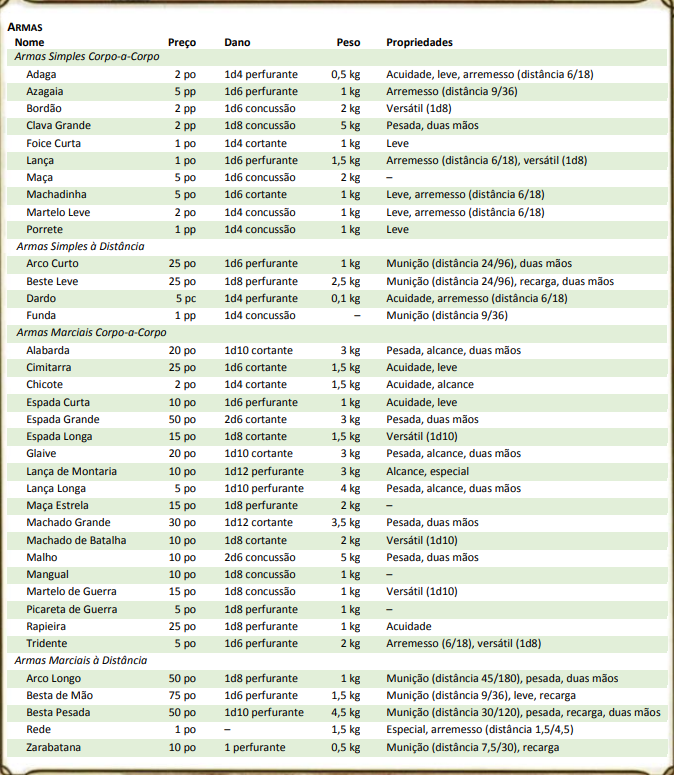

Sua classe garante a você proficiência com algumas armas, refletindo tanto o foco da classe, quanto as ferramentas mais prováveis que o personagem usa. Não importa se você prefere uma espada longa ou um arco longo, sua arma e a capacidade de manejá-la efetivamente podem significar a diferença entre a vida e a morte enquanto estiver se aventurando.
A tabela Armas mostra as armas mais comuns utilizadas nos mundos de D&D, seu preço e peso, os danos que elas causam quando atingem um alvo, e qualquer propriedade especial que elas possuem. Cada arma é classificada como corpo-a-corpo ou à distância. Uma arma corpo-a-corpo é usada para atacar um alvo a 1,5 metro de você, enquanto que uma arma à distância é usada para atacar um alvo a uma certa distância.
PROFICIÊNCIA EM ARMA
Sua raça, classe e talentos podem conceder a você proficiência com certas armas ou categorias de armas. As duas categorias são simples e marciais. A maioria das pessoas pode usar armas simples com proficiência. Essas armas simples incluem clavas, maças e outras armas encontradas frequentemente nas mãos dos plebeus.
Armas marciais, incluindo espadas, machados e alabardas, exigem um treinamento mais especializado para serem usada com eficácia. A maioria dos guerreiros usa armas marciais, pois essas armas permitem que seus estilos de luta e treinamentos tenham melhor proveito.
Proficiência com uma arma permite que você adicione seu bônus de proficiência na jogada de ataque em qualquer ataque que você realizar com essa arma. Se você realizar uma jogada de ataque utilizando uma arma com a qual não tenha proficiência, não adiciona seu bônus de proficiência na jogada de ataque.
PROPRIEDADES DAS ARMAS
Muitas armas têm propriedades especiais relacionados com a sua utilização, como mostrado na tabela Armas.
Acuidade. Quando realizar um ataque com uma arma com a propriedade acuidade, você pode escolher usar seu modificador de Força ou de Destreza para realizar a jogada de ataque e de dano. Você precisa usar o mesmo modificador para ambas as jogadas, ataque e dano.
Alcance. Essa arma adiciona 1,5 metro ao seu alcance quando você a usa para atacar. Essa propriedade também determina seu alcance ao realizar ataques de oportunidade com uma arma de alcance.
Arremesso. Se uma arma possuir a propriedade arremesso, você pode arremessar a arma para realizar um ataque à distância. Se essa arma for uma arma de ataque corpo-a-corpo, você usa o mesmo modificador de habilidade para as jogadas de ataque e dano que usaria para realizar um ataque corpo-a-corpo com a arma. Por exemplo, se você arremessar uma machadinha, ele usa seu modificador de Força, mas se arremessar uma adaga, você pode usar tanto seu modificador de Força quanto o de Destreza, pois a adaga possui a propriedade acuidade.
Distância. Uma arma que pode ser usada para realizar ataques à distância possui a distância mostrada entre parênteses após a propriedade munição ou arremesso. A distância lista dois números. O primeiro é a distância normal da arma, o segundo indica a distância máxima da arma, ambos em metros. Quando atacar um alvo que está além da distância normal da arma, você possui desvantagem na jogada de ataque. Você não pode atacar um alvo que esteja além da distância máxima da arma.
Duas Mãos. Essa arma requer as duas mãos para ser usada. Essa propriedade só é relevante quando você ataca com a arma, não enquanto apenas a segura.
Especial. Uma arma com a propriedade especial possui regras diferenciadas que detalham seu uso, explicado na descrição da arma (veja "Armas Especiais" mais adiante).
Leve. Uma arma leve é pequena e de fácil manuseio, tornando-a ideal para usar quando você está combatendo com duas armas. Veja as regras para combate com duas armas no capítulo 9.
Munição. Você pode usar uma arma que tenha a propriedade munição para realizar um ataque à distância, apenas se possuir munição para disparar a arma. Cada vez que você atacar com a arma, você gasta uma peça de munição. Sacar a munição de uma aljava, bolsa, ou outro recipiente faz parte do ataque. No fim da batalha, você pode recuperar metade de sua munição gasta, se tiver um minuto para procurar pelo campo de batalha. Recarregar uma arma de uma mão requer uma mão livre.
Pesada. Criaturas pequenas têm desvantagem nas jogadas de ataque com estas armas. O tamanho e o peso de uma arma pesada tornam-na muito grande para ser empunhada eficientemente por criaturas Pequenas.
Recarga. Devido o tempo necessário para recarregar essa arma, você pode disparar apenas uma peça de munição da arma quando usa uma ação, ação bônus, ou reação para disparar, não importando quantos ataques você possua.
Versátil. Essa arma pode ser usada com uma ou duas mãos. Um valor de dano aparece entre parênteses com a propriedade – é o dano da arma quando usada com as duas mãos para efetuar ataques corpo-a-corpo.
ARMAS IMPROVISADAS
Algumas vezes os personagens não possuem suas armas e precisam atacar com qualquer coisa que tenham ao alcance das mãos. Uma arma improvisada inclui qualquer objeto que o personagem possa empunhar com uma ou duas mãos, como um vidro quebrado, um pé de mesa, uma frigideira, uma roda de carroça ou um goblin morto.
Em muitos casos, uma arma improvisada é similar a uma arma existente e pode ser tratada como tal. Por exemplo, um pé de mesa é semelhante a uma clava. Com o consentimento do Mestre, um personagem que tenha proficiência com uma determinada arma pode usar um objeto similar como se fosse essa arma e usar seu bônus de proficiência.
Um objeto que não possua nenhuma semelhança com uma arma existente causa 1d4 de dano (o Mestre atribui o tipo de dano apropriado para o objeto). Se um personagem usar uma arma de ataque à distância para realizar um ataque corpo-a-corpo, ou arremessar uma arma corpo-a-corpo que não possua a propriedade arremesso, ela também causa 1d4 de dano. Uma arma improvisada de arremesso tem um alcance normal de 6 metros e um alcance máximo de 18 metros.
ARMAS DE PRATA
Alguns monstros que possuem imunidade ou resistência às armas não mágicas são suscetíveis a armas de prata. Aventureiros precavidos investem algumas moedas extras para cobrir suas armas com prata. Você pode cobrir com prata uma única arma ou 10 peças de munição por 100 po. Esse custo representa não apenas o preço da prata, mas o tempo e o conhecimento necessário para adicionar prata a uma arma sem deixá-la menos eficiente.
ARMAS ESPECIAIS
Armas com regras especiais são descritas aqui.
Lança de Montaria. Você tem desvantagem quando usar a lança longa para atacar um alvo a até 1,5 metro de você. Além disso, uma lança longa requer as duas mãos para ser empunhada quando você não está em uma montaria.
Rede. Uma criatura Grande ou menor atingida por uma rede fica impedida até se libertar. Uma rede não afeta criaturas que não possuam uma forma definida, ou criaturas Enormes ou maiores. A criatura pode usar sua ação para realizar um teste de Força CD 10 para se libertar, ou outra criatura dentro do alcance que obtiver sucesso no teste pode fazer isso por ela. Causar 5 de dano cortante à rede (CA 10) também liberta a criatura sem feri-la, encerrando o efeito e destruindo a rede. Quando você usa uma ação, ação bônus, ou reação para atacar com a rede, você pode realizar apenas um ataque, independentemente do número de ataques que você possa realizar normalmente.
-
